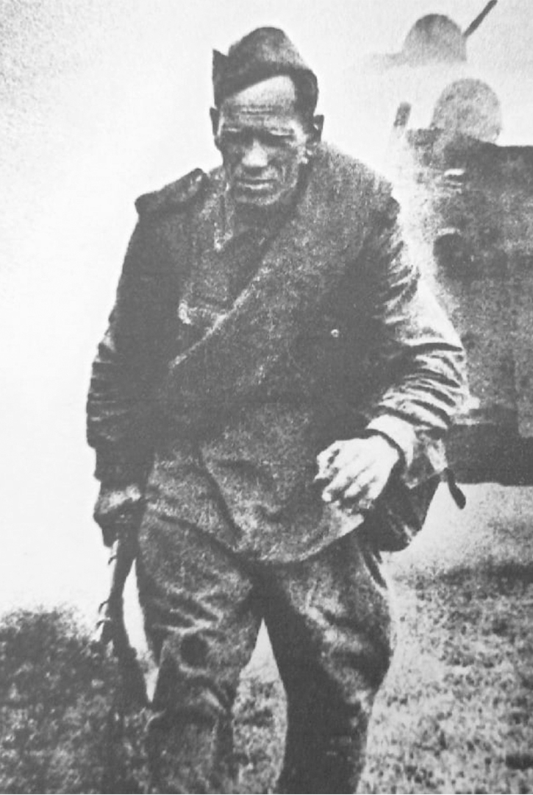

Чимаров Николай Васильевич
Биография
Мой прадедушка Николай Васильевич Чимаров , 1909 года рождения , участвовал в Великой Отечественной Войне 1941- 1945 г.г. Еще молодым человеком он пошел защищать свою Родину. Жил он тогда в Саратовской области , поселке Горный . У него была семья _ супруга Мария Матвеевна и трое маленьких детей : старший Анатолий, средний Виктор и маленькая Валентина (ныне моя бабушка). Послали дедушку воевать под Сталинград (ныне Волгоград) на самую линию фронта - на передовую (фронтовая линия). « Там происходили самые жестокие бои с противником : разрывались гранаты, пули свистели над головой , какая-то шальная пуля могла поразить рядом стоящего с тобой бойца», - рассказывал моей маме дедушка (ее папа): «…Было страшно…». Дедушка Николай рыл окопы, не гнушался самой тяжелой работы , терпел голод , холод , смотрел смерти прямо в глаза . На войне дедушка был ранен прямо в плечо, но остался жив, у него остался там осколок, который причинял беспокойство ему до конца дней. Также он был ранен в ногу, был оперирован , но часть осколка осталась. После Сталинграда дедушка направлялся на другие фронты , также на передовую. Закончилась война в 1945 году, и началась Русско- Японская Война в 1945 году , и дедушка Николай был направлен сразу с одной войны на защиту Родины на границу с Японией ,даже, не увидевшись с родными и семьей . К тому времени осиротели его дети , их уже воспитывала бабушка. Дедушка Николай отмечал потом, что Русско-Японская Война была даже страшнее , чем Великая Отечественная Война, и более жестокая. Воины были сильно истощены после Великой Отечественной Войны , многие погибали от болезней , голода, нагрузок. Дедушка пришел с Войны лишь через два года , к своей семье в Саратовскую область , поселок Горный. Дедушка Николай был очень добрый, скромный , честный человек. Моя мама всегда писала ему поздравительные открытки « С 9-м Мая 2 , и он был этому очень рад… Второго сентября 1995 года дедушка ушел из жизни , но память о его подвиге живет в наших сердцах , в сердце моей мамы , моей бабушки , всей нашей семьи и всего народа!